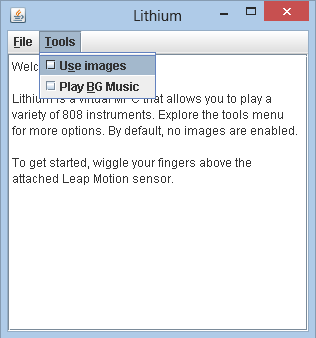
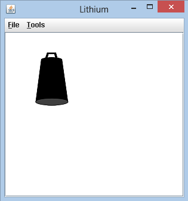
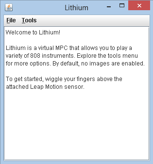

DESCRIPTION
Lithium uses the LeapMotion sensor to create a virtual sampler that is controlled using hand gestures. These gestures are based on finger tap movements of the right hand and the sound emitted is chosen by the finger that is registered as moving by the LeapMotion sensor.
FEATURES
- Play 5 different sounds (Kickdrum, Hi Hat, Cowbell, Clap, and Snare Drum)
- Play over background music that comes packaged with the program (can be toggled)
- Different functions for different hands: the right hand controls the sounds while the left hand controls the volume of the sounds
- The option to toggle between text output and image output when creating sounds
- Compatible on both Mac OS and Windows
- Portable

 CREDITS
Created by Kevin Edwards, Heather Huynh, and Sam Rakowski. The following tools were used to create this program:
- Java
- LeapMotion API
- Java.swing library
- Javax.sound.sampled library
- Notepad++
- Github